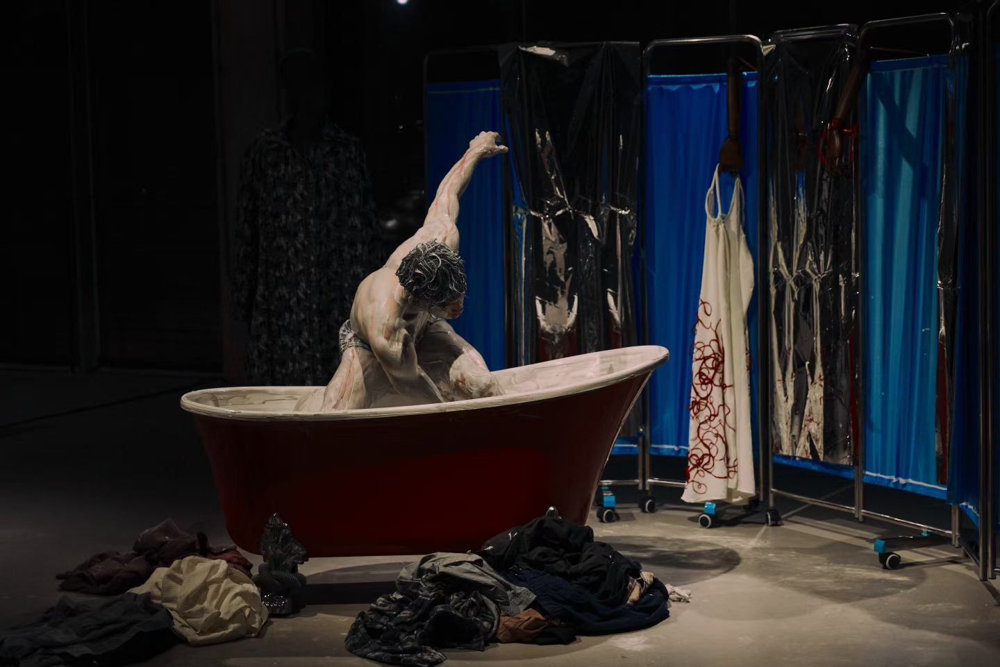

《心脏乐队》
Contemporary dance theatre made with Xie Xin Dance Theatre, built from improvisation in the rehearsal room rather than a finished script. Directed alongside Siyuan Ma.


Contemporary dance theatre made with Xie Xin Dance Theatre, built from improvisation in the rehearsal room rather than a finished script. Directed alongside Siyuan Ma.
